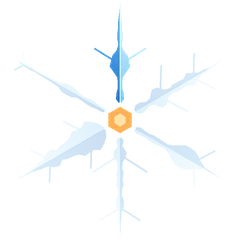
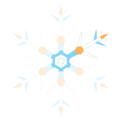
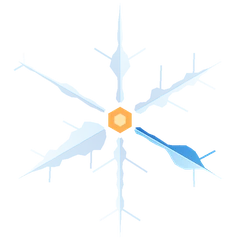
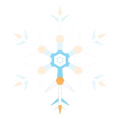
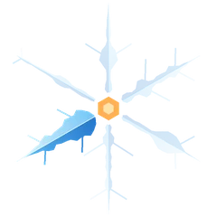
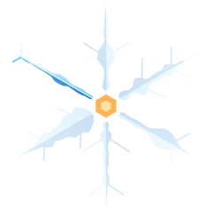

3.12.2026–28.1.2027 · Zwift
Kuusi iltaa, kuusi erilaista kisaa
Kisat ajetaan torstaisin klo 18.30 Suomen aikaa. Viisi parasta lasketaan, joten yhden voit jättää väliin.
Huom! Lähdöt ovat ikäkategorioita, eivät tehoryhmiä. Valitse lähtö oman kategoriasi mukaan, älä tavallisen Zwift-kategoriasi (A–D). Lähdöt: A = U23, B = Avoin, C = 40+, D = 50+, E = 60+.
-

Kisa 1 · to 3.12.
Jarvis Seaside Sprint × 2
Nopeat kirit: kuka osuu pisteille
-

Kisa 2 · to 10.12.
Double Espresso
Rullaava kisa: peesi ja ajoittaminen
-

Kisa 3 · to 17.12.
London Loop × 2
Box Hill kahdesti
- Joulutauko
-

Kisa 4 · to 14.1.
Tempus Fugit
Sinä ja kello: ei peesiä, ei power-uppeja
-

Kisa 5 · to 21.1.
2019 Worlds Harrogate Circuit × 3
MM-reitti ja sarjan pisin kisa
-

Kisa 6 · to 28.1.
Three Step Sisters
Finaali kolmella nousulla
Kisoihin pääsee vain näiden linkkien kautta. Tapahtumat eivät näy Zwiftin julkisessa listauksessa.
Ei erillistä ilmoittautumista
Näin pääset mukaan
- Luo ZwiftPower-tiliTili on pakollinen, koska tulokset luetaan ZwiftPowerista. Kirjaudu osoitteessa zwiftpower.com Zwift-tunnuksillasi ja yhdistä tili Zwiftiin palvelun ohjeiden mukaan, myös tulosten jakamisen hyväksyntä. Tili on valmis, kun näet ZwiftPowerissa oman profiilisi. Varaa tähän aikaa, äläkä jätä sitä kisapäivään, ja palaa sitten tälle sivulle.
- Laita varusteet kuntoonTarvitset Zwiftin, sykemittarin ja älytrainerin tai tehomittarin. ZPoweria ei hyväksytä.
- Tarkista profiilisiMaa, ikä ja sukupuoli tarkistetaan ZwiftPower-profiilista, joten niiden pitää olla oikein. Punnitse itsesi ja päivitä paino Zwiftiin viikon sisällä ennen ensimmäistä kisaasi, ja tarkista pituus. Jos asut Suomessa mutta profiilissa on muu maa, kerro siitä ennen kisaa osoitteeseen info@talvicup.fi.
- Aja ensimmäinen kisasiSarjaan ei ole omaa ilmoittautumislomaketta, mutta jokaiseen kisaan liitytään Zwiftissä: avaa kisalinkki tältä sivulta, liity tapahtumaan ja valitse kategoriaasi vastaava lähtö (A = U23, B = Avoin, C = 40+, D = 50+, E = 60+). Avaa Zwift ja siirry lähtöön viimeistään 15 minuuttia ennen klo 18.30. Kategoriasi lukittuu ensimmäiseen kisaan, jonka ajat maaliin, ja pysyy samana koko sarjan. Tule mukaan viimeistään kisassa 2, niin kaikki viisi parasta lasketaan.
Miehet ja naiset
Kisaat omassa ikäluokassasi
- U23
- Avoin
- 40+
- 50+
- 60+
Valitset itse kategoriaasi vastaavan lähdön, ja ikäsi luetaan ZwiftPower-profiilista ensimmäisessä kisassa, jonka ajat maaliin. Avoimessa voi ajaa kuka tahansa, ikäkategorioista saa valita nuoremman mutta ei vanhempaa, ja U23 on vain alle 23-vuotiaille.
Lue ennen ensimmäistä kisaa
Säännöt ja pisteet
Kisassa
- Sykemittari on pakollinen. Ensimmäisestä kisasta ilman sykettä tulee varoitus, seuraavat hylätään.
- Paino ja pituus ovat Zwift-profiilissasi oikein. Punnitse ja päivitä paino enintään 7 päivää ennen ensimmäistä kisaasi ja uudelleen vähintään kerran kuukaudessa, eli viimeistään ennen kisaa 14.1. Pituutta ei muuteta sarjan aikana. Järjestäjä voi pyytää selvitystä tai punnitusvideon.
- ZPower ei käy: tarvitset älytrainerin tai tehomittarin.
- Myöhässä ei pääse mukaan, joten ole lähdössä ajoissa.
- Lähtö on koko sarjan sama kuin lukittu kategoriasi. Muusta lähdöstä ei saa pisteitä.
- Pyörän päivitykset on neutraloitu.
- Aika-ajopyörä on sallittu vain kisassa 4.
- Power-upit ovat käytössä muissa kisoissa paitsi aika-ajossa.
- Paita on vapaa. Oman tiimin paitaa suositellaan.
Yhteistulos
Sarjan tulokseen lasketaan viisi parasta kisaa kuudesta.
Kisasta saa enintään 100 pistettä. Maaliintulokisassa ja aika-ajossa voittaja saa 100, toinen 96, ja pisteet laskevat 4 pistettä sijaa kohden 10. sijaan asti (64). Sen jälkeen ne laskevat 2 pistettä sijaa kohden, vähintään 2.
Pistekisoissa (kisat 1, 3 ja 5) maalista saa 50, 48, 46 … 10. sijaan asti (32), sen jälkeen piste vähemmän sijaa kohden, vähintään 1. Kireistä saa yhteensä enintään 50. Kirin ratkaisee nopein aika segmentillä, ja illan paras aikasi lasketaan. Kiripisteet saa kategoriasi ja sukupuolesi 10 nopeinta, ja vain jos ajat maaliin.
- Kisa 1: Jarvis Sprint Reverse ja Jarvis KOM Reverse, kumpikin 25–3 p.
- Kisa 3: Box Hill, 50–5 p.
- Kisa 5: Yorkshire KOM ja Yorkshire Sprint, kumpikin 25–3 p.
- Sijat lasketaan oman kategoriasi ja sukupuolesi suomalaisten ajajien kesken.
- Keskeytys ja poissaolo ovat 0 p.
- Tasapisteissä ratkaisee laskettujen kisojen paras tulos, sitten toiseksi paras ja niin edelleen, ja lopuksi viimeisen ajetun kisan tulos. Sama koskee tiimejä.
Tiimikilpailu
Tiimit kisaavat ZwiftPower-tiimien kautta. Tiimin kolmen parhaan ajajan pisteet kaikista kategorioista lasketaan yhteen, ja niistä tehdään oma tulostaulu. Tiimin viisi parasta kisaa lasketaan. Tiimisi lukittuu ensimmäiseen kisaan, jonka ajat maaliin sen edustajana.
Päivittyy kisojen jälkeen
Tulokset
Kisakohtaiset tulokset ovat ZwiftPowerissa heti kisan jälkeen. Alustava sarjatilanne ja tiimien tulostaulu julkaistaan täällä kisaa seuraavana päivänä, ensimmäisen kerran kisan 1 jälkeen.
Jos nimesi vieressä tulossivulla on ✉, ota yhteyttä osoitteeseen info@talvicup.fi. Merkki ei ole rangaistus, eikä se vaikuta pisteisiin.
Ennen ensimmäistä kisaa
Usein kysytyt
Minulla ei ole ZwiftPower-tiliä. Voinko silti ajaa?
Voit, mutta tili on pakollinen, koska tulokset luetaan ZwiftPowerista. Jos näyt kisan tuloksissa ilman tiliä, pisteesi lasketaan, mutta pyydämme sinua luomaan tilin ennen seuraavaa kisaa. Helpointa on luoda tili jo ennen ensimmäistä kisaa.
Mikä lähtö on minun?
Lähdöt ovat ikäkategorioita, eivät tehoryhmiä, joten valitse lähtö ikäsi mukaan, älä tavallisen Zwift-kategoriasi (A–D) mukaan: A = U23, B = Avoin, C = 40+, D = 50+ ja E = 60+. Avoimessa voi ajaa kuka tahansa, ja ikäkategorioista saa valita nuoremman. Jos valitsit ensimmäisessä kisassasi vahingossa väärän lähdön, kerro siitä osoitteeseen info@talvicup.fi, niin kategoriasi voidaan korjata. Korjaus koskee vain sitä kisaa, ja myöhemmin väärästä lähdöstä saa 0 pistettä.
En pääse kisaan 1. Kannattaako aloittaa myöhemmin?
Kyllä. Mukaan saa tulla missä kisassa tahansa, ja viisi parasta kisaa lasketaan. Kun aloitat viimeistään kisassa 2, kaikki viisi parasta kisaasi lasketaan. Myöhemmin aloittaessa saat pisteet ajamistasi kisoista, ja väliin jääneet ovat nollia.
Miten tiimi muodostetaan?
Tiimi on ZwiftPower-tiimi. Kisan tiimipisteet ovat tiimin kolmen parhaan ajajan pisteet kaikista kategorioista, joten tiimiin riittää kolme ajajaa mistä tahansa ikäluokista. Seuran lisäksi myös kaveriporukka tai työpaikka voi perustaa oman tiimin. Tee tiimi hyvissä ajoin ja valitse se profiiliisi ennen ensimmäistä kisaasi, koska tiimi lukittuu ensimmäiseen kisaan, jonka ajat maaliin sen edustajana.
Näkyykö nimeni tuloksissa? Voinko piilottaa sen?
Tuloksissa näkyvät kaikkien ajajien nimet muodossa E.Sukunimi, iästä ja seurasta riippumatta. Sijat ja pisteet lasketaan TalviCupin sääntöjen mukaan suomalaisten ajajien kesken, joten ne voivat poiketa ZwiftPowerin sijoista.
Jos et halua nimeäsi tuloksiin, lähetä viesti osoitteeseen info@talvicup.fi. Alle 18-vuotiaan puolesta viestin voi lähettää myös huoltaja. Viestiin riittävät ajajan nimi ZwiftPowerissa ja profiilin linkki. Silloin nimesi tilalla lukee ”(ei julkaista)”, ja sijasi ja pisteesi lasketaan silti normaalisti.
Somessa (Instagram, Facebook) alle 18-vuotiaan nimeä käytetään vain luvalla. Lupa ei ole osallistumisen tai pisteiden ehto. Nuori tai huoltaja voi kysyä lisää osoitteesta info@talvicup.fi. Piilotus koskee nimeä: sija ja pisteet näkyvät yhä, joten tuloksista voi tunnistaa ajajan, joka vertaa niitä ZwiftPoweriin.
Miten päivitän painoni Zwiftiin?
Punnitse itsesi ja kirjoita paino Zwift-profiiliisi ennen kisaa: Zwiftissä valikosta kohta Settings ja profiilisi tiedot, tai Zwift Companion -sovelluksessa oman profiilin muokkaus. Kirjoita paino desimaalin tarkkuudella. Zwift tallentaa painon jokaiseen ajoon, joten muutos näkyy tuloksissa seuraavasta kisasta alkaen.
Päivitä paino enintään 7 päivää ennen ensimmäistä kisaasi ja uudelleen vähintään kerran kuukaudessa. Joulutauon jälkeen punnitse ennen kisaa 14.1. Pituus pysyy samana koko sarjan. Jos huomaat, että pituus on ollut väärin, korjaa se ja kerro siitä osoitteeseen info@talvicup.fi.
Nimeni vieressä tulossivulla on ✉. Mitä se tarkoittaa?
Pyydämme sinua ottamaan yhteyttä osoitteeseen info@talvicup.fi. Meillä ei ole ajajien yhteystietoja, joten tavoitamme sinut tätä kautta. Syy voi olla esimerkiksi kategorian korjaus tai puuttuva tieto, eikä sitä näytetä sivulla. Merkki ei ole rangaistus, eikä se vaikuta pisteisiin.
Kirjoita viikon sisällä merkin ilmestymisestä ja kerro nimesi ZwiftPowerissa. Merkki poistuu, kun asia on hoidettu.
Miten pisteet lasketaan pistekisassa?
Kisat 1, 3 ja 5 ovat pistekisoja: pisteet tulevat maalijärjestyksestä ja kireistä, ja kirin ratkaisee nopein aika segmentillä. Tarkat pisteet ovat kohdassa Säännöt ja pisteet.
Miten jaan tulokseni?
Jos käytät Stravaa, nimeä suoritus muodossa TalviCup 2027 #N · reitti · talvicup.fi ja lisää kuvaukseen #talvicup. Näin kaverisikin löytävät sarjaan.
På svenska
Så deltar du
- ZwiftPower-kontoObligatoriskt, resultaten hämtas från ZwiftPower. Logga in på zwiftpower.com med ditt Zwift-konto och koppla kontona. Kontrollera land (Finland), ålder och kön i profilen.
- UtrustningPulsmätare och smart trainer eller effektmätare. ZPower godkänns inte.
- ViktVäg dig och uppdatera vikten i Zwift högst en vecka före ditt första lopp. Kontrollera längden.
- Start efter ålderA = U23, B = Öppen, C = 40+, D = 50+, E = 60+. Du får välja en yngre klass eller Öppen. Klassen låses i det första loppet du kör i mål.
- LoppetIngen separat anmälan: öppna tävlingslänken ovan, gå med i evenemanget i Zwift och var vid starten senast 15 minuter före kl. 18.30. Resultaten finns på talvicup.fi/tulokset dagen efter.
Frågor, rättelser och om ditt resultat saknas: info@talvicup.fi (du kan skriva på svenska).
Kysyttävää?
Puuttuuko tuloksesi tai onko ZwiftPower-profiilissasi väärä maa? Ota yhteyttä heti ja kerro kisan numero ja profiilisi linkki. Järjestäjä ratkaisee korjauksen sääntöjen mukaan, eikä pelkkä profiilin muutos jälkikäteen takaa pisteitä.
Kysymykset ja tulosten korjauspyynnöt: info@talvicup.fi. Korjauspyynnöt 48 tunnin sisällä alustavien tulosten julkaisusta.